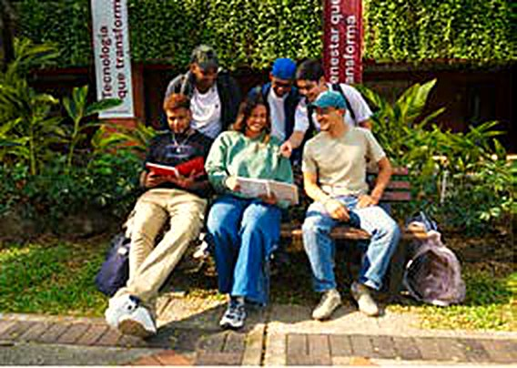

Cultura Digital
Te acompañamos en la apropiación de tecnologías, herramientas y prácticas digitales para que puedas incorporarlas con sentido a tu práctica educativa.

¿Qué quieres fortalecer?

Inteligencia artificial
Explora criterios, posibilidades y recursos para incorporar la IA con intención pedagógica.
Explorar IAHerramientas institucionales
Encuentra orientaciones para aprovechar las herramientas digitales disponibles en la Universidad.
Ver herramientasCompetencias digitales
Fortalece conocimientos y habilidades para desenvolverte en entornos educativos mediados por tecnología.
Ver formaciónEnseñanza híbrida y digital
Encuentra orientaciones para integrar recursos, interacción y tecnología en experiencias híbridas o digitales.
Explorar orientaciones
Café Digital UAO
Conversaciones entre colegas sobre prácticas digitales que puedes probar en tu próxima clase.
Microcapacitaciones
Sesiones breves para resolver una necesidad concreta con una herramienta o una práctica.
Rutas formativas
Trayectorias más largas para desarrollar una competencia y llevarla a tu práctica.
Herramientas para tu práctica
Encuentra guías y orientaciones para aprovechar las herramientas digitales institucionales en tus experiencias de enseñanza.
Aula virtual
Organiza tu curso, publica materiales y comunica fechas importantes.
Videoconferencia
Mantén la interacción durante una sesión en línea.
Evaluación en línea
Configura rúbricas y retroalimentación para tus estudiantes.
Conoce a nuestro equipo
Conoce a las personas que acompañan la apropiación de tecnologías y el fortalecimiento de la cultura digital en la comunidad universitaria.
-
Nombre y apellido
Apropiación tecnológicaTe orienta en el uso de las herramientas institucionales.
-
Nombre y apellido
IA en educaciónExplora contigo criterios para usar la IA con intención pedagógica.
-
Nombre y apellido
Formación docenteCoordina talleres, cursos y espacios como Café Digital UAO.

Solicita acompañamiento
¿Quieres fortalecer algún aspecto de tu práctica digital?